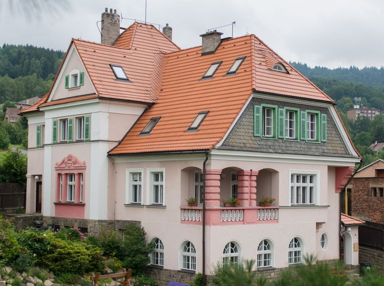
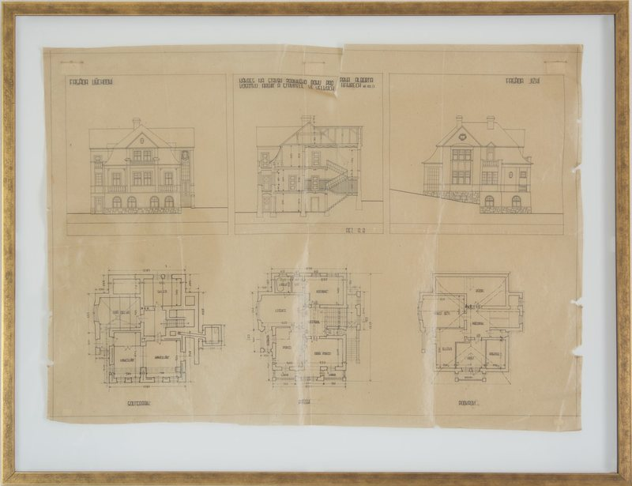
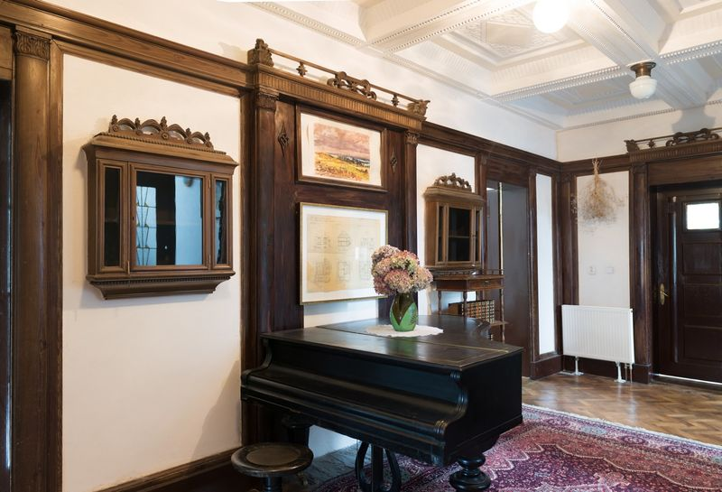
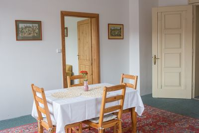
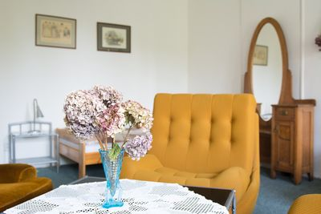
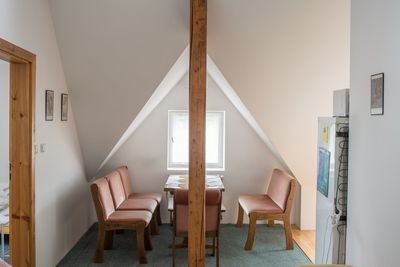
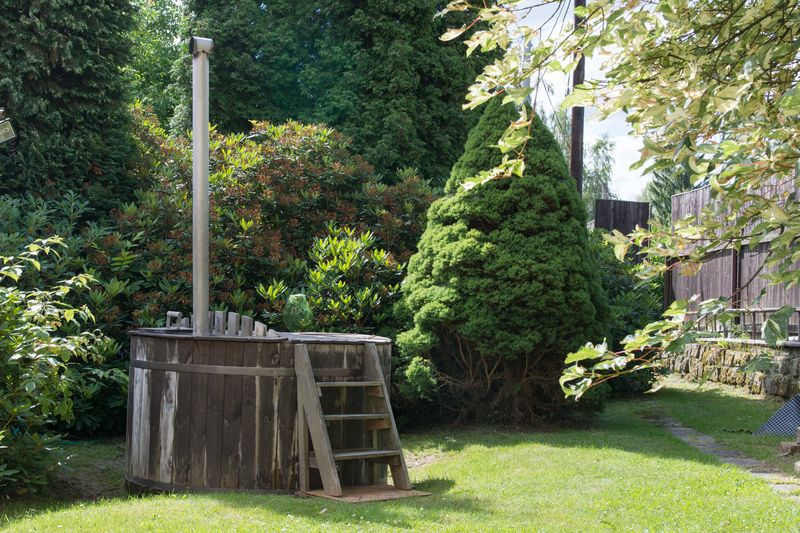
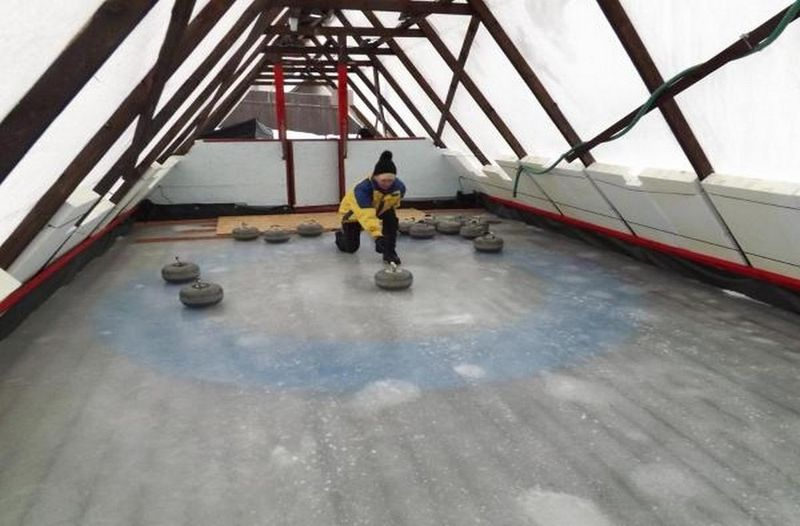
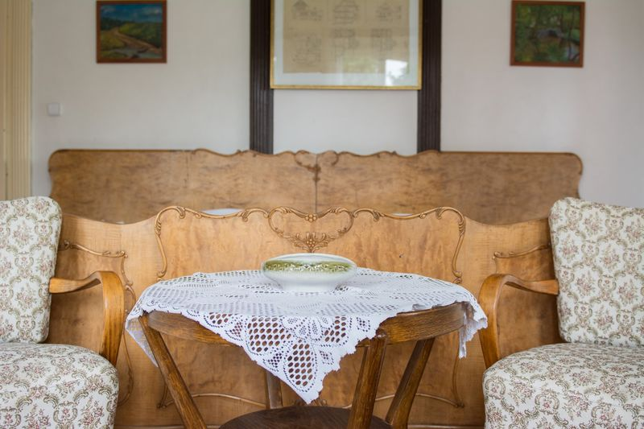

Signum Laudis Penzion ve Velkých Hamrech
Apartmány s kuchyní ve vile z roku 1921, na kraji Jizerských hor.
Apartmán pro dva od 1 310 Kč za noc

Vosátkova vila
Vilu si v roce 1921 postavil Ing. Albert Vosátko, významný stavitel zdejšího kraje. V roce 2009 prošla rekonstrukcí a stal se z ní penzion.
Zůstala stoletá dřevěná okna, původní dveře a zábradlí. V apartmánech je starožitný nábytek ze soukromé sbírky.
Apartmány
Každý apartmán má vlastní kuchyň. Ceny jsou za apartmán a noc.

Viktorie V 1. podlaží, bezmála 170 m². Hala s klavírem, dvě koupelny, lodžie do zahrady. Až 6 hostů. pro dva 1 827 Kč za noc-

Radmila Ve 3. podlaží, 2+1. Dvě ložnice, až 4 hosté. Z okna je vidět kostelík na náměstí. pro dva 1 310 Kč za noc -

Liběna Ve 3. podlaží, 2+1. Dvě ložnice, až 4 hosté. Okna do zahrady. pro dva 1 310 Kč za noc -

Stella Ve 4. podlaží, pod střechou. Tři ložnice, až 6 hostů. Výhled až na starou vodní elektrárnu. pro dva 1 525 Kč za noc
Co najdete v domě a na zahradě
Sauna s odpočívárnou, koupací sud na zahradě po celý rok, solná sloj, kulečník, stolní tenis, autodráha a dětské hřiště. Všechny služby penzionu jsou v ceně ubytování.


Kniha hostů
Marie „Tento penzion je pro nás srdeční záležitostí a opakovaně se do něj vracíme.“ Jan „Pohoda, krása architektury staré 100 let, vše potřebné funkční. Prostorné.“

Termín a cena
Napište, kdy chcete přijet a kolik vás bude. Ozveme se, který apartmán je volný a kolik bude stát. Nebo rovnou zavolejte.
Velké Hamry 429, 468 45 Velké Hamry.